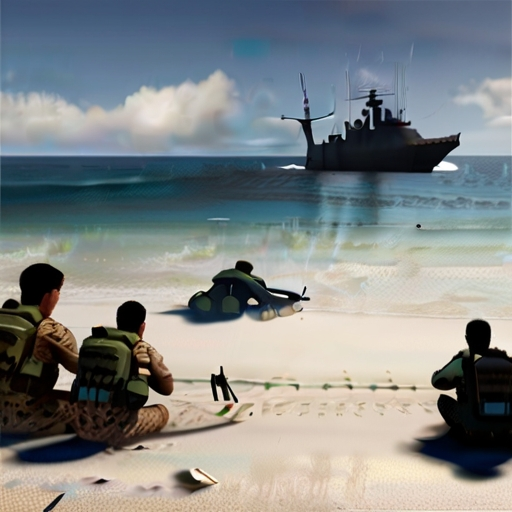
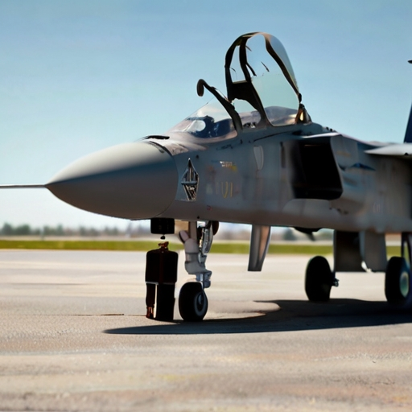
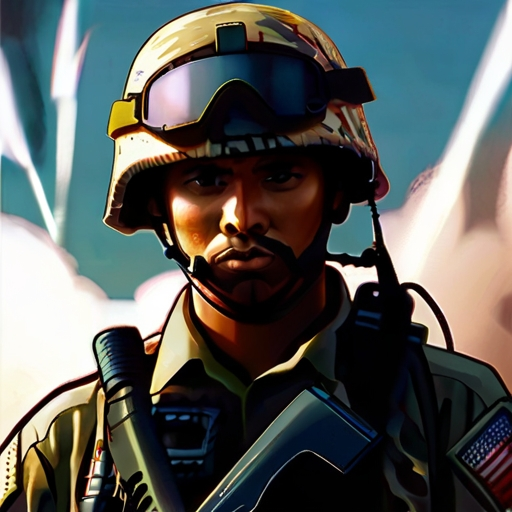

| Introduction |
| Title 10: Armed Forces, is a significant piece of legislation that outlines the organization, structure, and legal basis for the roles of each of the services as well as the United States Department of Defense. Each of the following six subtitles addresses distinct facets or elements of the armed forces. |
| Subtitle A | |
General Military Law, to include Uniform Code of Military Justice (UCMJ)
It outlines the roles and responsibilities of the Secretary of Defense, who is the head of the Department of Defense (DoD), and the Joint Chiefs of Staff, who advise the President and Secretary of Defense on military matters. Covers topics such as enlistment, appointment, promotion, and separation of military personnel. Military personnel receive comprehensive and effective training and education to fulfill their roles, maintain readiness, and adapt to evolving challenges in national defense. Establishes guidelines and procedures for financial accountability, supply chain management. This includes things from military vehicles and weapons all the way to uniforms and food supplies. Also covers provisions for providing support to dependents. The acquisition process in the military involves the identification of needs, research and development, property and services for the Department of Defense Established by the United States Congress, governs the military justice system for all branches of the U.S. armed forces. This is the framework for military discipline, conduct, and legal proceedings. |
|
| Subtitle B | |
ArmyResponsible for land-based military operations, the Army plays a crucial role in defending the nation, and supporting national security objectives. |
|
| Mission | The world is changing, but our mission and purpose remains constant: “to deploy, fight, and win our nation’s wars by providing ready, prompt, and sustained land dominance as part of the joint force of all U.S. military.” (goarmy.com, n.d) |
| Formed | June 14, 1775, is the oldest branch of the military. |
| What's the Difference? | Land-based operations: responsible for securing and controlling territory on the ground, engaging in direct land combat, and supporting ground-based missions. |
| Army's Motto | “This We’ll Defend” |
| Subtitle C | |
Navy and Marine CorpsResponsible for maritime operations, amphibious warfare, and supporting land operations. . |
|
| Navy: Mission | The mission of the Navy is to maintain, train and equip combat-ready Naval forces capable of winning wars, deterring aggression and maintaining freedom of the seas. |
| Formed | October 13, 1775 as the date of its official establishment. |
| What's the Difference? | Amphibious operations: In addition to maritime operations, the navy works closely with the Marine Corps to conduct amphibious assaults and disaster relief missions. |
| Navy's Motto | “Non sibi sed patriae” (Latin for “Not self, but country”) |
| Marine Corps: Mission | The task of capturing or defending strategic naval bases and conducting land operations to support naval campaigns. Marines are trained to operate on both land and sea, ready and equipped for quick response for any crisis. |
| Formed | November 10, 1775 in Philadelphia, formed from two battalions of Continental Marines |
| What's the Difference? | Though Marines operate as part of the Navy, they are very much an independent force and sometimes referred to as the “tip of the spear”. They are often first on the ground and serves as a quick reaction force with special units that are highly trained to respond to a wide range of crises at any time. |
| Marine Corp's Motto | “Semper Fidelis” (Latin for “Always Faithful”) |
| Subtitle D | |
Air Force and Space ForceResponsible for aerospace and space superiority, together they ensure national security and defense across multiple domains. |
|
| Air Force: Mission | Provides a rapid, flexible, and lethal air and space capability that can deliver forces anywhere in the world within hours |
| Formed | September 18, 1947 authorized by National Security Act of 1947. |
| What's the Difference? | To achieve and maintain aerospace superiority, which involves controlling airspace and ensuring freedom of action in air and space domains. |
| Air Force Motto | “Aim High… Fly-Fight-Win” |
| Space Force: Mission | Secure our Nation’s interests in, from, and to space. Safeguard our nation and preserve the freedom to conduct operations in space, ensuring security, stability, and accessibility for military space capabilities. |
| Formed | December 20, 2019 and being the first new branch since 1947 |
| What's the Difference? | Focus is on space operations and space superiority from space and while in space. |
| Space Force Motto | “Semper Supra” (Latin for “Always Above”) |
| Subtitle E | |
Reserve ComponentsThe reserve components are made up of Army, Navy, Marine, Air Force, Coast Guard Reserves, to include Army and Air National Guard whose members serve in a part-time capacity while maintaining civilian careers or obligations. | |
| Mission | During times of national need, such as natural disasters, conflicts, or other emergencies, reserve component units can be activated and deployed alongside active-duty forces to fulfill missions and support military operations. |
| What's the Difference? | Unlike active-duty (or full-time), reserve members work a minimum of 39 days of military duty, which is at least one weekend a month and two weeks a year in training. They must remain ready and trained and can be activated in time of war or national emergency. |
| Subtitle F | |
Alternative Military Personnel Systems |